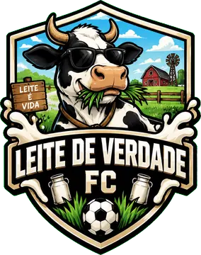
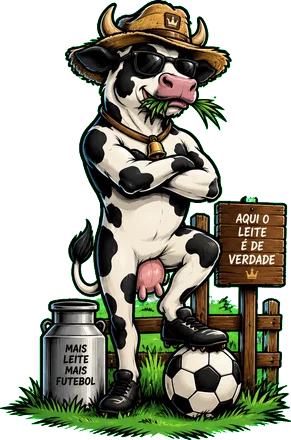
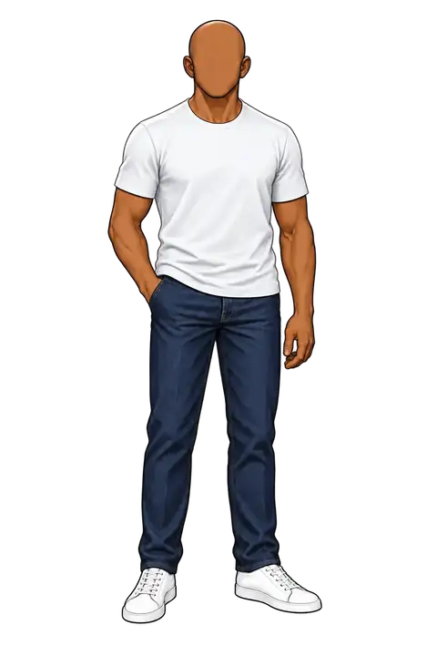
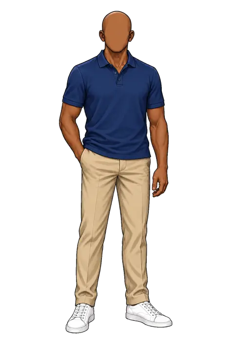
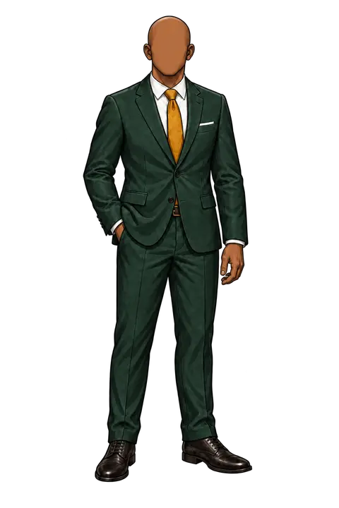
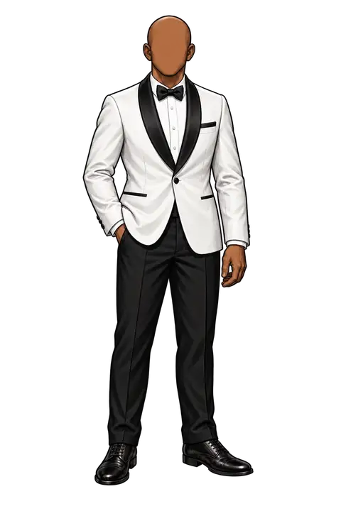
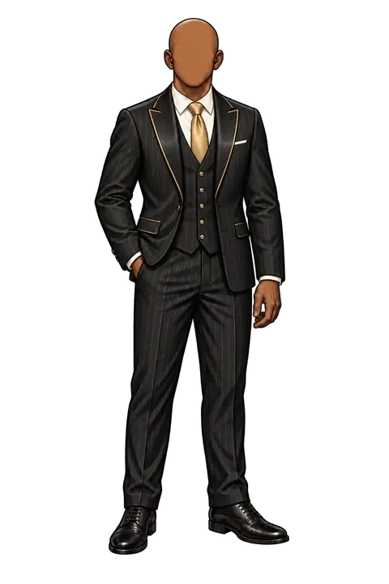
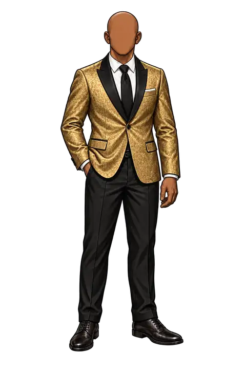

CARREIRA PASSO A PASSO · LIBERADO PRA TODOS
Como fica pra quem NÃO tem plano nem batismo (1 e 2) · e a tela de rivais pra quem TEM batismo (3)
Primeiro o clube. Depois, o presidente que vai comandá-lo.
Escudo automático e camisa lisa na cor do seu apoio (bege). Mascote só aparece quando você tiver um.


Exemplo: Leite de Verdade FC. Escudo, manto e mascote próprios, que viajam com a sua conta.
① Já existe assim hoje (sem batismo = escudo automático + camisa bege)
Todo mundo ganha um presidente. As outras roupas você vê e prova.


POLO AZUL⭐ CRAQUE · 1,99
TERNO⭐ CRAQUE · 1,99
SMOKING BRANCO👑 LENDA · 2,99
REI DO PREGÃO🖋 BATISMO · 3,99
GALA DOURADA🖋 FUNDADOR · 4,99Careca e camiseta branca são de graça. Cabelo, barba e as outras roupas: no plano ou avulsas (dá pra provar antes).
② Muda: o boneco básico vira grátis (careca + camiseta branca, fundo bege)
Escolha quem disputa os envelopes com você.
🖋 O Neymarzetti não aparece aqui porque é o seu clube: escudo e mascote não se repetem na mesma liga.
③ Todos os batismos e fundadores · o seu sai · linha discreta só pra quem tem batismo